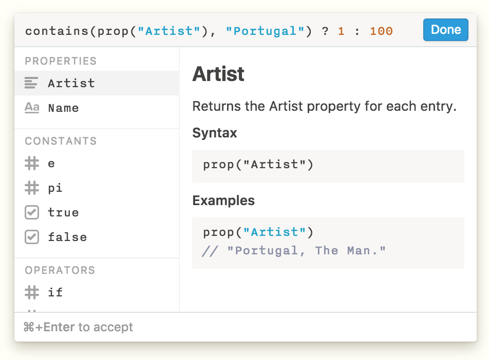
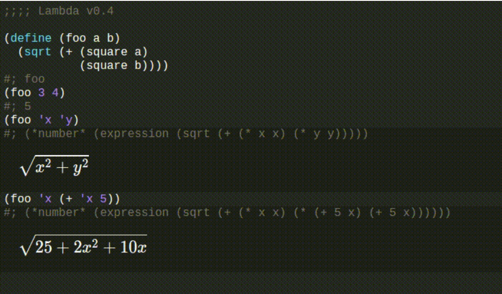

About
Joel Gustafson / About
Hi! I'm Joel.
I care about a lot of Big Ideas, and want to make computing universally accessible to everyone as a medium and an art. I believe in direct manipulation of data, augmenting human intellect, and dynamic, interactive documents, unlike most of the ones you’ll find here.
Some of my projects are a bit weird (that’s deliberate) and some of my heroes are a bit eccentric (that’s unfortunate). I only hope they’re thought-provoking.
Work
In 2018 I joined Protocol Labs as an independent researcher.
In summer 2017 I worked on Notion, a Lego-like composable productivity tool. I wrote a DSL and designed an editor for querying and computing on structured data. 
In summer 2016 I started working with Gerry Sussman and Jack Wisdom to redesign the online notes for 6.946: Computational Classical Mechanics. The project spiralled into symbolic Scheme programming environment in the browser and a native Jupyter kernel. 
Before that, I worked in the Viral Communications Group at the Media Lab as an undergraduate researcher with Travis Rich on PubPub, a platform for free and open academic publishing. PubPub emphasizes radical transparency, hosts curated grassroots journals, and weaves an intertwingled mesh of natively digital documents.
Education
I graduated from MIT in 2018 with a BS in Mathematics with Computer Science. You can check out all the classes I took on Courseroad, but here are some highlights:
- Automata, Computability, and Complexity (Scott Aaronson)
- Adventures in Symbolic Programming (Gerry Sussman)
- Magic as Interface, Technology, and Design (NovySan)
- Design Across Scales (Meejin Yoon & Neeri Oxman)
- Quantum Computation (Seth Lloyd)
- Human Intelligence Enterprise (Patrick Henry Winston)
- Cryptography and Cryptanalysis (Shafi Goldwasser)
- How To Make (almost) Anything (Neil Gershenfeld)
Heroes
These are just a few of the people who continually inspire me with the depth of their perception and the extent of their vision. Maybe someday we’ll realize their dreams, but until then, with ideas that are still radical, we fight on.
“The visual arts are the imitation of life, but the computing arts are the imitation of creation itself.”
“There is no ‘Technology’. There is no ‘Design’. There is only a vision of how mankind should be, and the relentless resolve to make it so.”
“The key thing about all the world’s big problems is that they have to be dealt with collectively. If we don’t get collectively smarter, we’re doomed.”
“Most people are fools, most authority is malignant, God does not exist, and everything is wrong.”
“Programs must be written for people to read, and only incidentally for machines to execute.”